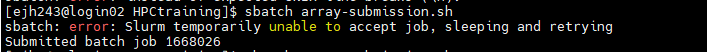
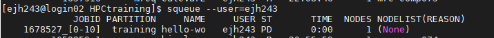
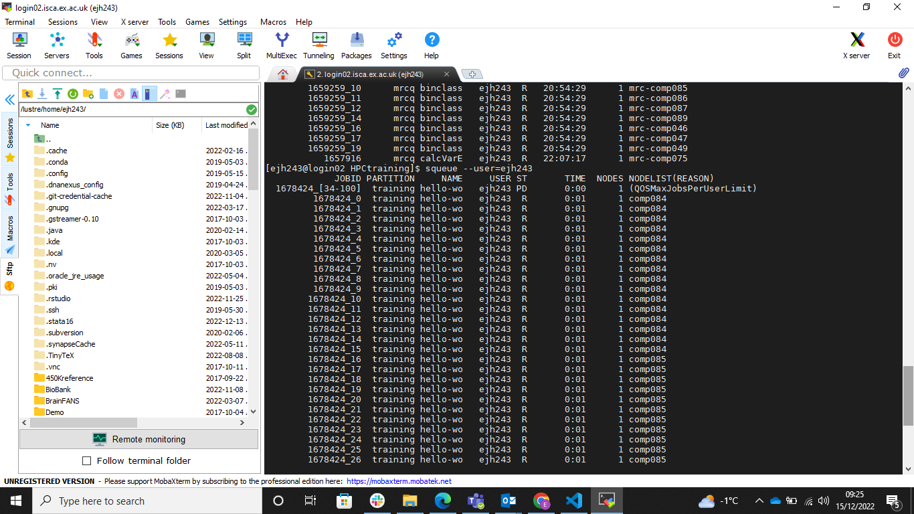

Harnessing the power of the scheduler#
While it can be a frustrating process developing a script for the job scheduler and troubleshooting errors or unexpected outcomes, the scheduler comes with a few added benefits that can enhance your workflow.
Job environment variables#
When Slurm runs a job, it sets a number of environment variables for the job. We can take advantage of these in our job submission script. For example, the SLURM needs to record which directory the job was submitted from, this is stored in the SLURM_SUBMIT_DIR variable. We can use this variable in our job submission script to print the location from which the job was submitted, which will add it to the job standard output file. This variables can be really helpful for troubleshooting filepath errors.
#!/bin/sh
#SBATCH --export=ALL # export all environment variables to the batch job.
#SBATCH -p sq # submit to the serial queue
#SBATCH --time=00:10:00 # Maximum wall time for the job.
#SBATCH -A Research_Project-HPC-Training # research project to submit under.
#SBATCH --nodes=1 # specify number of nodes.
#SBATCH --ntasks-per-node=16 # specify number of processors per node
#SBATCH --mail-type=END # send email at job completion
#SBATCH --output=hello-world.o
#SBATCH --error=hello-world.e
#SBATCH --job-name=hello-world
## print start date and time
echo Job started on:
date -u
echo "hello-world"
## print node job run on
echo -n "This script is running on "
hostname
echo "This job was launched in the following directory:"
echo ${SLURM_SUBMIT_DIR}
## print end date and time
echo Job ended on:
date -u
A full list of SLURM variables is available (here)[https://hpcc.umd.edu/hpcc/help/slurmenv.html]
Chaining multiple scripts#
Thus far the job submission scripts have only called a single R/Python script along with some UNIX commands to summarise the job stats. However, you don’t have to have a single job submission script for each script you want to run. The job submission script is a script like any other and can be as long or as short as you want it to. The scheduler will process each command in turn until it reaches the end of the script or an error. You are also not limited to only using one software in a job submission script.
Consider the example below, where we will use a single job submission script to run both our R script calc-squares.R and our python script calc-squares.py.
The script contains the module load statements for each language and the command to execute the relevant scripts. You will also not the inclusion of the module purge command. This is to clear the environment when we switch from R to Python. This might not be strictly necessary but is good practice to avoid conflicts between software.
#!/bin/sh
#SBATCH -p training # submit to the serial queue
#SBATCH --time=00:10:00 # Maximum wall time for the job.
#SBATCH -A Research_Project-HPC-Training # research project to submit under.
#SBATCH --nodes=1 # specify number of nodes.
#SBATCH --ntasks-per-node=1 # specify number of processors per node
#SBATCH --mail-type=END # send email at job completion
#SBATCH --output=exampleJob.o
#SBATCH --error=exampleJob.e
#SBATCH --job-name=exampleJob
## print start date and time
echo Job started on:
date -u
module load Python/3.10.4-GCCcore-11.3.0
python calc-squares.py
module purge
module load R
Rscript calc-squares.R
## print end date and time
echo Job ended on:
date -u
This approach means you can have your entire pipeline contained within a single job submission script. Once complete that means running or re-running your analysis becomes as simple as executing a single command.
Shifting to running your analysis as a series of scripts rather than copy and pasting the commands into a console, benefits your research as it makes it more reproducible. You now have an accurate record of what you actually did, rather than what you think you did assuming you copied all the commands into the console, that they all worked and didn’t produce any errors, that you then saved any edits from the errors that you did notice and fix, and that you ran the commands in the order that you recorded them. Furthermore, it then gives you scope to rerun the same pipeline for a different dataset or set of parameters easily.
When you move your work from your desktop/laptop to HPC system you might have to rethink how you structure it. This may be enforced or you may want to take advantage of the change to put some thought into the design.
Programming takes advantage of repetitive processes -
Serial vs Parallel processing#
When we write a programme we write a series of commands that the “computer” executes one after the other. This sequential process requires one command to finish executing before the next can start. This means that the time the programme takes to run is the sum of each part (plus a bit of overheads). The logic of a programme is important, and the order of commands is important - but there are times when the programme, or elements of the programme, do not need to be run in sequence.
For example think about the for loop below
for(number in 1 2 3 4 5){
print number * number
}
This loop takes the values 1 to 5 in turn and calculates the square. The output would be
1
4
9
16
25
We can generalise this loop to run through any series of numbers. The time that the loop takes to run, depends on the number of numbers we want to square. The longer the list the longer, the longer the execution time. This way of running the code is call serial. We run one command at any point in time.
In this example, the output of each command does not depend on the previous command. Calculating the square of 2 does not require us to know the square of 1. We don’t actually need to wait for that command to finish. If we had more than one computer available we could distribute these jobs and speed up the execution without changing the output. This approach is called parallel processing. The real power of HPC is taking advantage of the multiple compute nodes simultaneously to speed up the compute time.
To truly exploit this you typically need to use functions/wrappers/arguments to your script that do this distribution of tasks for you. These tend to be specific for different languages/programmes. However, you can manually parallelize your workflow, by identifying elements that can be run in parallel and submitting them as separate jobs to the queue. In this scenario you need to be conscious of and minimize the number of steps that will be repeated in exactly the same manner for all jobs. For example the pre-processing of the data as this is a waste and inefficient use of compute power. If your script has a hours worth of loading the data, you are then preventing others and yourself from accessing these resources ultimately eating into the gains from parallel processing.
It is worth noting that parallel processing is not the sole preserve of HPC, as your desktop/laptop has multiple cores you can exploit that for parallel processing.
Job arrays#
Programming takes advantage of repetitive processes. If you intend on running a number of similar jobs at the same time then the scheduler contains a tool that removes the need for lots of similar job submission scripts, job arrays. This means that potentially millions of tasks can be submitted in milliseconds (subject to configured size limits). All jobs must have the same initial options (e.g. size, time limit, etc.), however it is possible to change some of these options after the job has begun execution using the scontrol command specifying the JobID of the array or individual ArrayJobID.
Using this approach you create an array of numbers, where the total count of numbers equals the total number of jobs you wish to submit. The real power comes as each element in this array gets passed to each job as variable you can use in that job. You can use variable to subtly change how the job runs. For example, we could use this variable to set a different seed and run a series of simulations in parallel, or you could use it to subset a different element of an array which lists different input files to process, or to process a specific chromosome.
Below is an example job submission script for a batch array job. It differs from the othe rjob submission scripts we have used in a couple of ways
It has an extra SLURM command at the beginning that defines the array using the
--arrayflag. In this example we have requested 11 jobs (0-10 inclusive).The output and error file names have the
-%A_%awhere%Ais replaced with the job number and%ais replaced with the array number. This means you will have separate log files for each job. If we didn’t include the%athen the output from every job submitted would end up in the same output file - making it very hard to debug which errors apply to which job.We have printed the SLURM variable
${SLURM_ARRAY_TASK_ID}which is array index of that specific job which we can use to alter how the script performs.
We submit this job to the queue in the same way using sbatch array-submission.sh. If successful we only get one “Submitted batch job 1668026” command.

However, if we check the queue we will see all ten of our jobs listed. The jobs have an ID in the format

Once they start running in the queue each job has it’s own entry in the queue.

You won’t recievd an e-mail that the jobs has finished until all the jobs have completed. Once complete we should also have 11 standard output files and 11 standard error files, 1 for each job. If we look in a couple of these we should see subtly different output
Job started on:
Wed Dec 14 20:53:09 UTC 2022
hello-world
This script is running on comp084
This job number 1668066 and array number 4
Job ended on:
Wed Dec 14 20:53:09 UTC 2022
Job started on:
Wed Dec 14 20:53:09 UTC 2022
hello-world
This script is running on comp084
This job number 1668066 and array number 8
Job ended on:
Wed Dec 14 20:53:09 UTC 2022
In this example everything is identical except the array numbers. It just so happens that these jobs started at the same time but there is no guarantee that they would do. Each job is it’s only element in the queue and has to wait for the required resources to become available. We can see this more explicitly if we increase the number of jobs in the array to 100.
While the jobs are queued they only take up one row in the squeue output, which the array indexes still to be run listed after the “_”. Once the array is running in the queue it is listed as it’s own entry. In the example below, we can see that there are a number of jobs running in the queue. But the line at the very top tells us that arrays 34-100 are still pending.

You may want to control yourself how many jobs from the array are run at any one time. You can do this as with the % symbol. For example the command:
#SBATCH --array=0-10%5
means that 11 jobs are added to the queue, but a maximum of 5 are run at any point in time. Even if the resources are available, job “XXX_5” won’t start until one of the first 5 has finished. In this situation you will see the reason for your jobs being held in the queue given as JobArrayTaskLimit as opposed to QOSMaxJobsPerUserLimit which is when the system decides you have the maximum number of allowed jobs running and all your other jobs have to wait in the queue until til one of your current jobs finishes.

If you want to clear the queue of the jobs that haven’t started yet you can use:
scancel <job id> -t PENDING
This will leave jobs that are already allocated to resources running and just cancel those yet to start.
What if you want to vary how many elements in your array. Instead of including it in the job submission script you can provide it on the command line when you submit the job. For example
sbatch --array=0-2 hello-world-submission.sh
will submit the job to the queue 3 times. Obviously because this script doesn’t utilize the array number in the output file names they will just overwrite each other.
We also don’t have to use consecutive indexes.
sbatch --array=0-2,5-7,10 hello-world-submission.sh